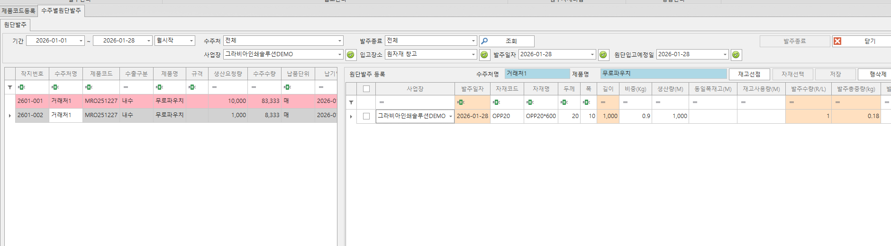
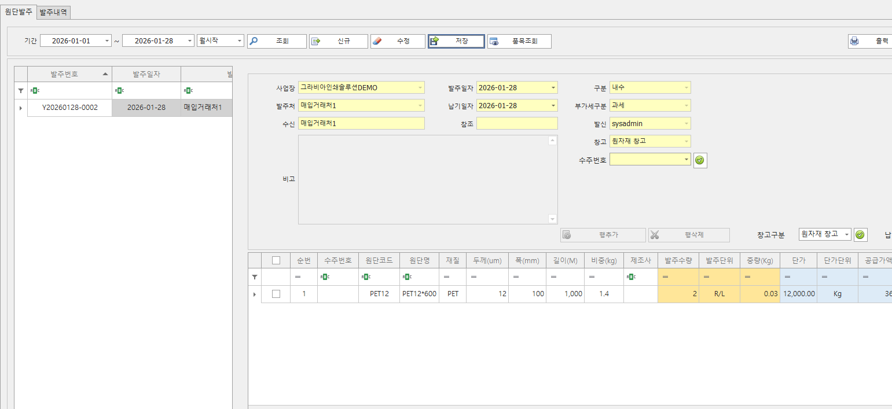
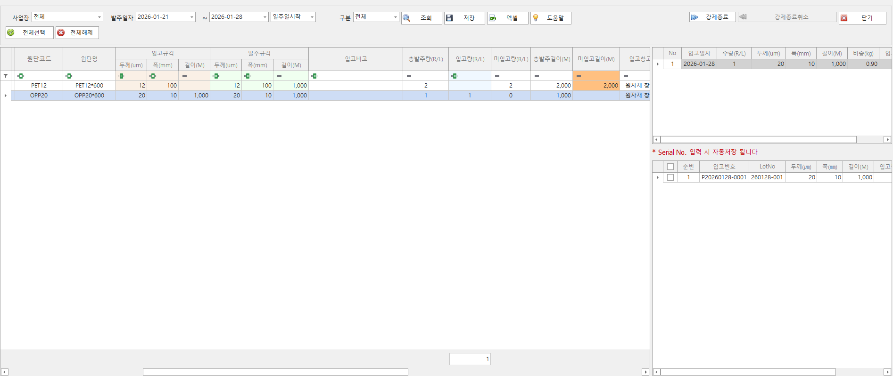
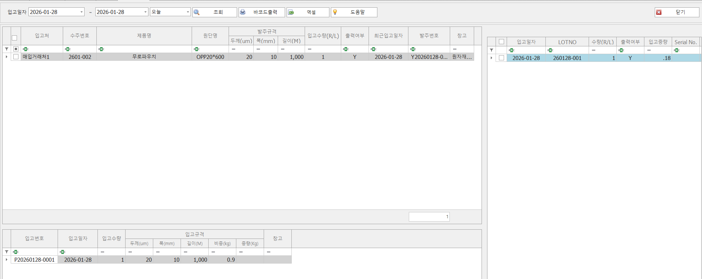
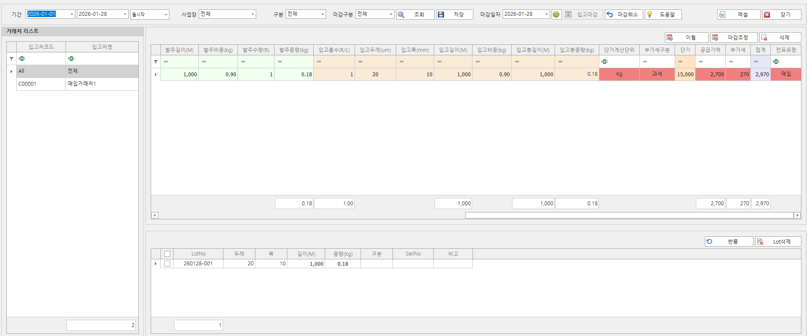
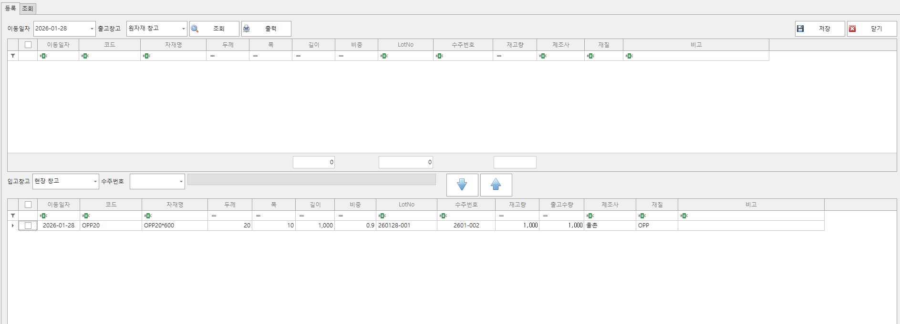

구매자재 관리
구매 요청부터 발주, 입고, 재고까지의 흐름을 한 화면에서 관리해 공급망 안정성과 원가 관리 정확도를 높입니다.
구매자재 관리 화면

수주별원단발주
- 수주(주문)의 생산 작업을 위해 필요한 원단을 발주를 관리할 수 있습니다.

개별원단발주
- 수주(주문)과 관련없이 자재를 발주하여 재고를 관리할 수 있습니다.

원단입고
- 수주별원단발주 또는 개별원단발주 원단을 입고할 수 있습니다.
- 입고 자재는 개별 로트가 자동 발행되어 재고로 관리됩니다.

원단라벨출력
- 입고 시 발행된 Lot를 기반으로 한 라벨이 출력됩니다.
- 자재 외부에 발행된 라벨을 부착하여 자재 투입 시 추적이 가능합니다.

원단입고마감
- 입고 내역에 대한 금액 마감을 관리할 수 있습니다.
- 시점에 따라 변경된 금액 정보를 마감 데이터로 변경 입력 가능합니다.
- 마감 처리 시 자동으로 마감 처리 이력이 기록됩니다.

창고이동전표
- 자재 투입을 위해 창고간 자재 이동을 관리할 수 있습니다.